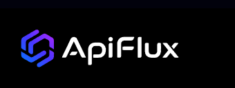
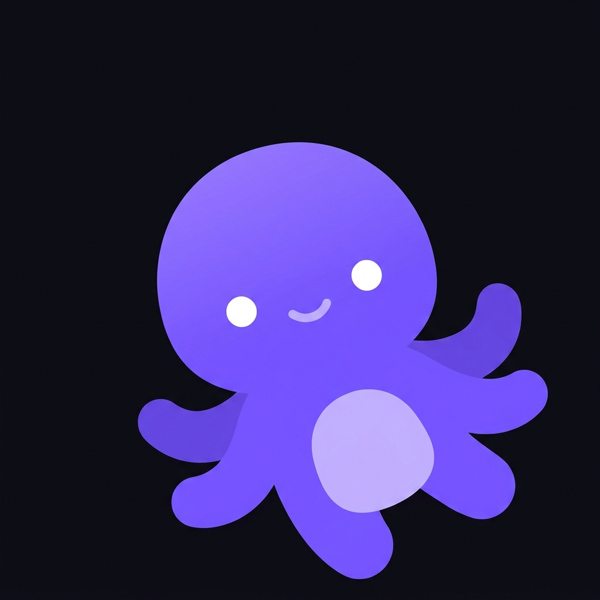

EDITORIAL DECISION GUIDE
Best LLMs
for Coding
in 2026
A field guide to choosing by task, reliability, and total cost.
DECISION EVIDENCE
Task profile → candidate tier
TASKSTART WITHACCEPT WHEN
routine / repeatable
fast tier
checks pass
daily production
balanced
diff is reviewable
ambiguous / long-horizon
frontier
tests pass